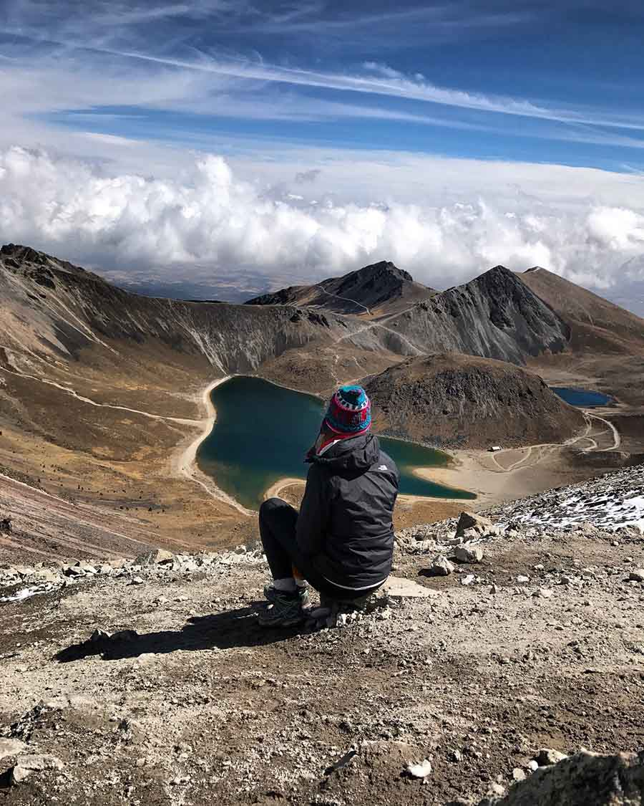

Ethical travel
Our trips are planned with both environmental and cultural sustainability in mind, with the goal of leaving the smallest ecological footprint on the hiking area. Participants are expected to respect their hiking trail and behave accordingly.
Local connections
Adventure Trails works closely with local organizations to ensure that much of the profit goes back to the local communities. This may be in the form of infrastructure and trail maintenance to supporting local businesses and communities.
Respect for nature
Many of our hikes include extra activities such as bird watching and short courses on edible local plants.
Culture
In the interest of cultural exchange and sustainability Adventure Trails also includes cultural activities, which include experiences of various local customs, dress, theatre, dance, and music.